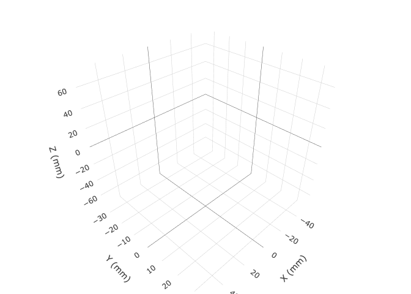
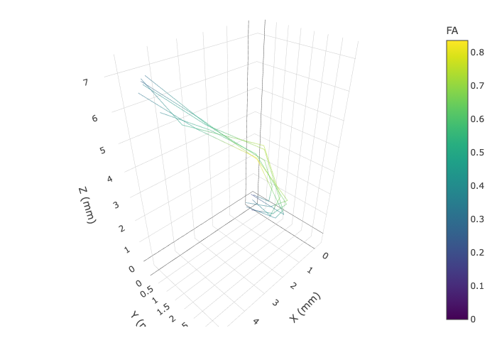
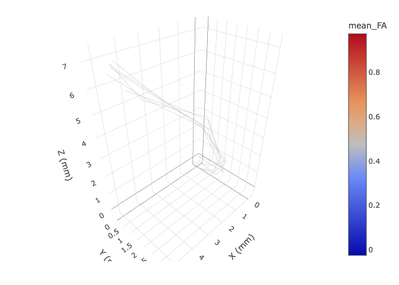
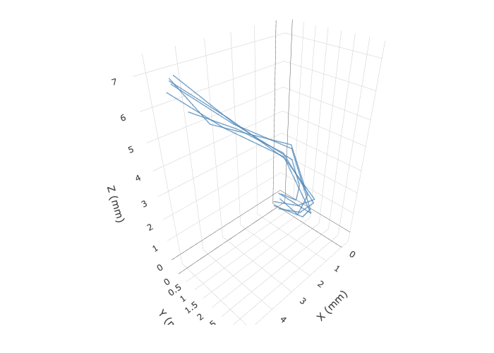

rtists (R for Tissue Integrity Superimposed on Tractography Streamlines) provides interactive 3-D visualisation of tractography streamlines and bundles defined in the fiber package.
The main function is plot3d(), an S7 generic with methods for both fiber::streamline and fiber::bundle objects. Figures are rendered by plotly and are fully interactive (pan, rotate, zoom).
Installation
Install the development version from GitHub:
# install.packages("pak")
pak::pak("tractoverse/rtists")Usage
Build some fiber objects
library(rtists)
library(fiber)
pts <- matrix(
c(
0, 0, 0,
1, 2, 1,
2, 3, 3,
3, 3, 5,
4, 2, 6,
5, 1, 7
),
ncol = 3, byrow = TRUE,
dimnames = list(NULL, c("X", "Y", "Z"))
)
sl <- streamline(
points = pts,
point_data = list(FA = c(0.25, 0.40, 0.65, 0.70, 0.55, 0.30)),
streamline_data = list(mean_FA = 0.475)
)
set.seed(42)
bun <- bundle(lapply(seq_len(6), function(i) {
noise <- matrix(rnorm(nrow(pts) * 3, sd = 0.2), ncol = 3)
colnames(noise) <- c("X", "Y", "Z")
streamline(
points = pts + noise,
point_data = list(FA = pmin(pmax(sl@point_data$FA + rnorm(6, sd = 0.05), 0), 1)),
streamline_data = list(mean_FA = mean(sl@point_data$FA))
)
}))
plot3d() — colour modes
All the following examples only display a static figure, but the actual output of plot3d() is an interactive widget. You might want to run the code yourself to see the full effect or take a look at the vignette for interactive 3D examples.
Default: orientation colours
Each point is coloured by the direction of the local tangent vector using the standard DTI convention (left–right = red, anterior–posterior = green, superior–inferior = blue):
plot3d(bun)
Colour by per-point metadata
Pass any key from @point_data to map a continuous scalar to a colour scale:
plot3d(bun, color = "FA", palette = "Viridis")
Colour by per-streamline metadata
Keys from @streamline_data are broadcast to all points of each streamline, giving every tract a single uniform colour:
plot3d(bun, color = "mean_FA", palette = "RdYlBu")
Fixed colour
Any CSS colour name or hex code colours all lines identically:
plot3d(bun, color = "steelblue", opacity = 0.7, linewidth = 3)
Colour modes at a glance
color value |
Behaviour |
|---|---|
"orientation" (default) |
Per-point RGB from local fibre direction |
Name of a @point_data key |
Continuous or categorical scale per point |
Name of a @streamline_data key |
Uniform colour per streamline |
CSS / hex string (e.g. "steelblue") |
Fixed colour for all lines |
Additional arguments (palette, linewidth, opacity, ...) are documented in ?plot3d.